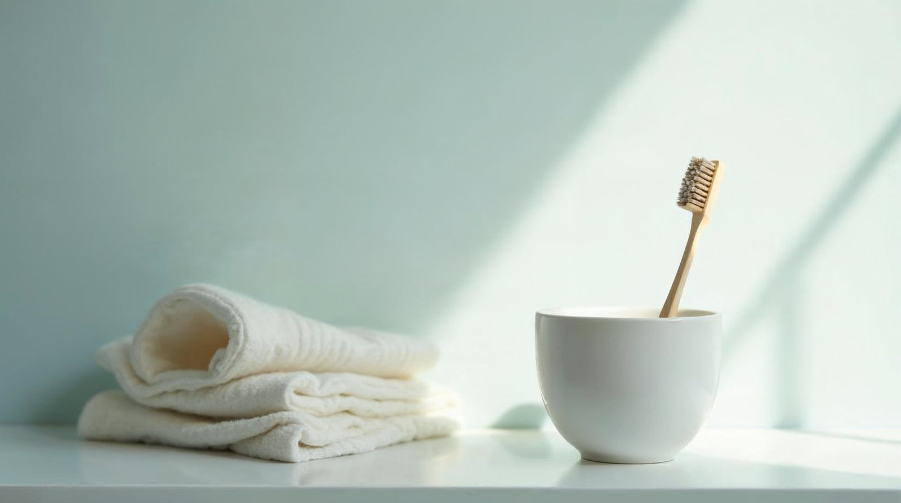
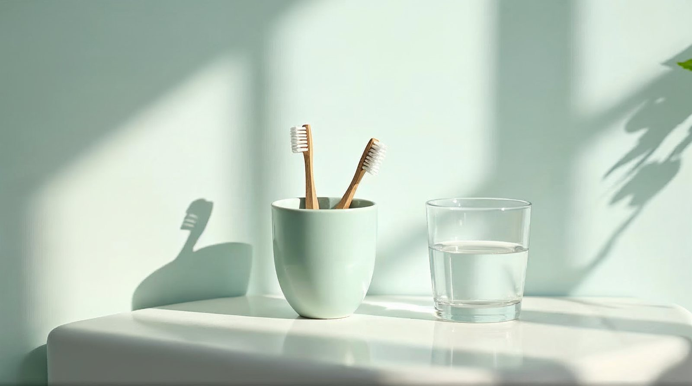
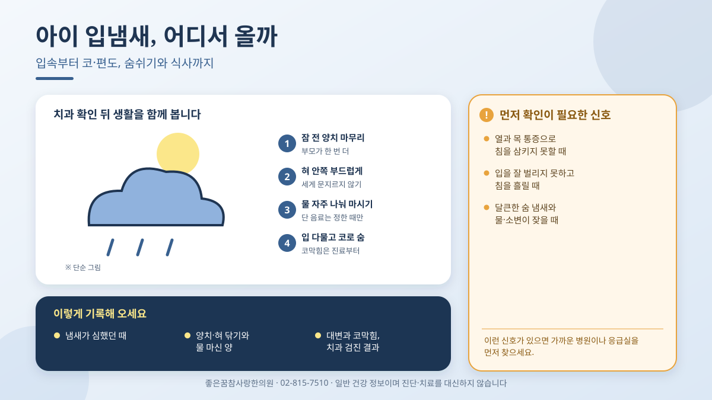

이종호 한의사 감수좋은꿈참사랑한의원 대표원장 (한의사 면허번호 19769)발행 2026-11-26 · 수정 2026-11-27
이 글의 차례
아침에 아이를 깨우며 꼭 안아 주는데, 아이 입에서 생각지 못한 냄새가 훅 올라와요. 어젯밤에 분명 양치를 시켰는데 왜 그럴까 싶어 혀를 내밀어 보게 하고, 칫솔질을 다시 시켜 봅니다. 그런데 며칠이 지나도 냄새가 쉽게 사라지지 않죠.
진료실에서 아이 입냄새 얘기를 조심스럽게 꺼내시는 부모님이 계세요. 친구가 "너 입에서 냄새 나"라고 말해 아이가 속상해했다는 얘기를 들으면 부모 마음은 더 급해지죠. 아이가 입을 가리고 웃는 모습을 보면 뭐라도 해 주고 싶어지실 거예요.
먼저 이 말씀부터 드릴게요. 자고 일어난 아침에 입냄새가 나는 건 어른도 아이도 원래 그래요. 자는 동안 침이 줄어서 입속이 마르니까요. 그러니까 사실은 '아침에 잠깐 나는 냄새'와 '낮에도 이어지는 냄새'는 다른 얘기예요. 뒤쪽이라면 조금 더 살펴보시면 돼요.
아이 입냄새는 대부분 입속에서 비롯되지만, 코와 편도, 입으로 숨 쉬는 습관, 먹는 것과 배변처럼 여러 곳과 이어져 있기도 해요. 이 글에서는 어디부터 살피면 좋을지 순서대로 정리해 볼게요.

아이 입냄새는 어디서 올까요
입냄새의 대부분은 입속에서 생깁니다. 입안에 남은 음식 찌꺼기와 혀 표면에 쌓인 백태를 세균이 분해하면서 냄새가 나는 것입니다. 특히 혀 안쪽에 하얗게 낀 백태는 양치를 해도 잘 닦이지 않아 냄새의 원인이 되기 쉽습니다.
충치나 잇몸 염증이 있을 때도 냄새가 납니다. 젖니 사이에 음식이 끼기 쉬운 아이, 단 간식을 자주 먹는 아이, 밤에 우유나 주스를 마시고 바로 잠드는 아이는 입속 세균이 늘어나기 쉽습니다.
아침에 일어났을 때 입냄새가 가장 심한 것은 자연스러운 일입니다. 자는 동안에는 침이 적게 나와 입안이 마르고 세균이 늘어나기 때문입니다. 아침밥을 먹고 양치를 한 뒤에 냄새가 줄어든다면 크게 걱정하지 않으셔도 됩니다. 어른도 마찬가지입니다.
왜 양치를 해도 냄새가 남을까요
첫째, 입으로 숨을 쉬는 습관입니다. 코가 막혀 입을 벌리고 자거나, 낮에도 입을 벌리고 있는 아이는 입안이 쉽게 마릅니다. 침은 입안을 씻어 내고 세균을 줄이는 역할을 하는데, 입이 마르면 그 힘이 약해져 냄새가 쉽게 납니다.
둘째, 코와 목의 문제입니다. 축농증이 있으면 누런 콧물이 목 뒤로 넘어가며 냄새가 나고, 편도가 크거나 편도 주름에 하얀 알갱이가 끼면 특유의 냄새가 날 수 있습니다. 아데노이드가 커서 늘 입으로 숨 쉬는 아이도 입냄새를 자주 보입니다.
셋째, 먹는 것과 물입니다. 물을 적게 마시는 아이는 입안이 마르기 쉽고, 단 간식과 음료를 자주 먹으면 입속 세균이 좋아하는 환경이 됩니다. 끼니를 자주 거르거나 오래 굶은 뒤에도 입냄새가 나기 쉽습니다.
넷째, 속과 배변입니다. 변비가 있거나 소화가 더딘 아이, 늦은 밤에 먹고 바로 자는 아이에게서 입냄새를 이야기하시는 경우가 있습니다. 속과 입냄새의 관련은 사람마다 다르지만, 식사와 배변 리듬을 함께 보면 아이 몸 전체의 흐름을 살피는 데 도움이 됩니다.
한의학에서는 아이 입냄새를 속에 열이 쌓이거나 먹은 것이 잘 내려가지 않는 모습과 함께 살펴 왔습니다. 이것은 아이 상태를 관찰하는 오래된 설명이지 진단명은 아닙니다. 진찰에서는 혀와 배, 배변과 식사를 함께 보며 참고합니다.
다른 냄새에도 귀 기울여 주세요
아이 입냄새가 평소와 확연히 다르다면 냄새의 성질을 기억해 두시면 좋습니다. 감기와 함께 콧물이 누렇게 바뀌면서 비릿하거나 썩은 듯한 냄새가 난다면 코 쪽을 먼저 살펴봐야 합니다.
한쪽 콧구멍에서만 냄새 나는 콧물이 계속 나온다면 어린아이의 경우 콧속에 작은 물건이 들어갔을 수도 있습니다. 이럴 때는 집에서 빼내려 하지 말고 소아청소년과나 이비인후과에서 확인받으세요.
열이 나고 목이 아프며 침을 삼키기 힘들어하는 아이에게서 냄새가 난다면 편도나 목에 염증이 있을 수 있습니다. 숨에서 과일 같은 달큰한 냄새가 나면서 물을 많이 마시고 소변이 잦다면 혈당을 확인해 봐야 합니다.
먼저 이렇게 여쭙니다
아이 입냄새가 걱정된다고 하시면 저는 아래와 같은 질문을 차례로 드립니다.
- 입냄새를 알아차린 지 얼마나 되었고, 하루 중 언제 가장 심한가요?
- 하루 양치는 몇 번, 누가 마무리해 주나요? 혀도 닦나요?
- 최근 치과 검진은 언제 받았나요? 충치나 잇몸 이야기를 들었나요?
- 코가 자주 막히거나, 입을 벌리고 자거나, 코를 고나요?
- 물은 하루에 얼마나 마시나요? 단 간식이나 음료를 자주 먹나요?
- 대변은 며칠에 한 번 보고, 굳거나 힘들게 보지는 않나요?
- 늦은 밤에 먹고 바로 자는 일이 잦나요?
아이에게는 "입에서 맛이 이상하거나 목이 따끔한 적 있어?" 하고 물어봅니다. 그리고 진찰 때 혀를 내밀어 보게 하며 백태와 혀의 색을 함께 봅니다.
일상에서 먼저 해 볼 수 있는 것
아이 입냄새 관리는 입속을 깨끗하게, 입안을 촉촉하게, 생활 리듬을 규칙적으로 하는 것에서 시작합니다.
- 하루 두세 번 양치, 잠들기 전 양치는 부모가 마무리해 주기
- 혀 안쪽까지 부드럽게 닦아 주기(아이가 헛구역질하지 않는 선에서)
- 치실이나 치간 칫솔로 이 사이 음식물 빼 주기
- 물은 하루 여러 번 나눠 마시기
- 단 간식과 음료는 정해진 시간에만, 먹은 뒤에는 물로 헹구기
- 잠들기 전 우유나 주스를 마셨다면 양치 다시 하기
혀를 닦을 때는 칫솔로 너무 세게 문지르지 말고, 혀 안쪽에서 바깥쪽으로 가볍게 몇 번 쓸어 주세요. 혀가 따갑거나 붉어질 만큼 닦으면 오히려 상처가 날 수 있습니다.
아침밥은 입냄새를 줄이는 데도 도움이 됩니다. 씹는 동안 침이 나오면서 입안이 씻기기 때문입니다. 아침을 거르는 아이라면 사과나 당근처럼 아삭한 것을 조금이라도 씹게 해 주세요.

나이에 따라 양치를 돕는 방법이 다릅니다
어린 아이는 스스로 칫솔질을 해도 구석구석 닦기 어렵습니다. 아이가 먼저 닦게 한 뒤 부모가 무릎에 아이 머리를 눕히고 한 번 더 마무리해 주는 방법이 좋습니다. 어금니 씹는 면과 잇몸 경계, 앞니 안쪽처럼 놓치기 쉬운 곳을 차례로 닦아 주세요.
초등학생이 되면 스스로 하는 습관을 길러 주되, 잠들기 전 양치만큼은 한동안 부모가 확인해 주시면 좋습니다. 모래시계나 노래 한 곡처럼 양치 시간을 재는 도구를 쓰면 아이가 너무 짧게 끝내는 것을 막을 수 있습니다.
교정 장치를 하고 있는 아이라면 장치 둘레에 음식이 끼기 쉬워 냄새가 나기 쉽습니다. 치과에서 장치 닦는 방법을 다시 안내받고, 식사 뒤에는 물로라도 꼭 헹구게 해 주세요.
어린이집과 학교에서의 습관도 살펴 주세요
아이가 낮 시간의 대부분을 보내는 곳에서 물을 얼마나 마시는지, 점심 뒤 양치를 하는지 한 번 물어보세요. 물병을 챙겨 보내도 그대로 들고 오는 아이가 많습니다. 쉬는 시간마다 한 모금씩 마시는 약속을 정해 두면 입안이 덜 마릅니다.
점심 뒤 양치가 어렵다면 물로 입을 여러 번 헹구는 것만으로도 남은 음식물을 줄이는 데 도움이 됩니다. 아이가 좋아하는 작은 휴대용 칫솔을 함께 골라 주면 스스로 챙기는 재미가 생깁니다.
입으로 숨 쉬는 습관을 살펴 주세요
입냄새가 이어지는 아이를 보면 입을 살짝 벌리고 있는 경우가 많습니다. 책을 읽거나 영상을 볼 때, 잠잘 때 아이의 입 모양을 한 번 지켜보세요. 입술이 늘 떨어져 있고 입술이 자주 마른다면 코로 숨 쉬기가 불편한지 확인해 볼 필요가 있습니다.
코막힘이 원인이라면 소아청소년과나 이비인후과에서 비염, 축농증, 아데노이드 상태를 확인받는 것이 먼저입니다. 코가 뚫린 뒤에도 입을 벌리는 습관이 남아 있다면 "입술은 닫고, 혀는 입천장에"를 놀이처럼 연습해 보세요.
잠자리가 너무 건조하면 입안이 더 마릅니다. 겨울에는 방 습도를 알맞게 맞추고, 잠들기 전 물을 한 모금 마시게 하는 것도 도움이 될 수 있습니다.
변비와 식사 리듬도 함께 봅니다
변비가 있는 아이는 배가 더부룩하고 입맛이 떨어지기 쉽고, 먹는 양과 물이 줄면서 입안도 마르기 쉽습니다. 입냄새와 함께 변을 며칠씩 못 보거나 힘들게 본다면 배변 습관을 함께 살펴봐 주세요.
채소와 과일, 잡곡을 조금씩 늘리고, 물을 자주 마시고, 아침밥 뒤 화장실에 앉는 시간을 정해 두는 것이 기본입니다. 저녁은 잠들기 두세 시간 전에 마치고, 늦은 밤 간식은 줄여 주시면 속도 편하고 아침 입냄새도 덜한 경우가 많습니다.
계절에 따라 달라지기도 합니다
겨울에는 난방으로 실내가 건조하고 감기와 비염으로 코가 자주 막혀, 입으로 숨 쉬는 시간이 늘어납니다. 그래서 겨울이면 아침 입냄새가 부쩍 심해졌다고 말씀하시는 부모님이 많습니다. 잠자리 습도를 챙기고, 코막힘이 길어지면 진료를 받아 보시길 권합니다.
여름에는 땀을 많이 흘리는데 물은 그만큼 마시지 않아 입안이 마르기 쉽습니다. 찬 음료와 아이스크림을 자주 먹으면 입속에 단 기운이 오래 남기도 합니다. 단 음료보다 물이나 보리차를 자주 마시게 해 주세요.
아이 마음도 함께 살펴 주세요
친구에게 입냄새 이야기를 들은 아이는 생각보다 크게 상처받습니다. 말할 때 입을 가리거나, 친구 가까이 가기를 꺼리거나, 웃음이 줄어들기도 합니다.
아이에게 "냄새 나니까 양치해"라고 자주 말하기보다, "우리 같이 이 닦기 놀이 해 볼까?"처럼 함께하는 방식으로 바꿔 주세요. 입냄새는 부끄러운 일이 아니라 관리하면 줄어들 수 있는 일이라는 것을 아이가 느끼게 해 주시는 것이 중요합니다.
아이가 친구 말 때문에 속상해한다면 그 마음부터 먼저 들어 주세요. "그 말 듣고 많이 속상했겠다" 하고 공감해 준 뒤에 함께 방법을 찾자고 이야기하면, 아이는 관리를 숙제가 아니라 자기를 위한 일로 받아들이기 쉽습니다. 부모가 먼저 함께 양치하는 모습을 보여 주는 것도 좋은 출발입니다.
한의원에서 함께 살필 수 있는 경우
- 치과에서 큰 이상은 없다고 들었는데 입냄새가 이어지는 아이
- 입냄새와 함께 변비가 있고 배가 자주 더부룩한 아이
- 코가 자주 막히고 입을 벌리고 자는 아이(이비인후과 진료와 함께)
- 입이 짧고 늦은 밤에 먹는 습관이 있으며 혀에 백태가 두꺼운 아이
좋은꿈참사랑한의원에서는 먼저 치과와 소아청소년과, 이비인후과에서 확인받을 부분이 남아 있지 않은지 살핍니다. 그다음 맥을 짚고 혀와 배를 살피며 식사, 배변, 잠, 숨쉬기 습관을 함께 봅니다.
진찰한 내용을 바탕으로 식사 시각과 물 마시기, 배변 습관처럼 생활에서 바꿔 볼 것을 먼저 정합니다. 아이 상태에 따라 침이나 한약 상담이 필요한지는 진찰 뒤 판단하며, 한약은 아이가 먹는 약을 모두 확인한 뒤 신중히 정합니다. 입냄새가 바로 사라진다고 약속드리지는 않습니다.
이렇게 기록해 오시면 상담이 쉬워집니다
입냄새는 하루 중에도, 날마다도 달라집니다. 일주일 정도 간단히 적어 오시면 원인을 좁혀 가는 데 도움이 됩니다.
- 입냄새가 심했던 때(아침, 식후, 저녁 등)
- 양치 횟수와 혀를 닦았는지
- 그날 먹은 간식과 음료, 물 마신 양
- 대변 본 날과 모양
- 코막힘, 콧물 색, 입 벌리고 잔 날
- 최근 치과 검진 결과
기록을 펼쳐 보면 '코가 막힌 날 아침에 더 심하구나', '변을 못 본 날 냄새가 더 나는구나' 같은 연결이 보이기도 합니다. 그 연결이 아이에게 맞는 관리법을 찾는 실마리가 됩니다.
입냄새는 몸이 보내는 작은 신호입니다
아이 입냄새는 부모를 당황하게 하지만, 대부분은 입속 관리와 생활 습관을 다듬으면서 조금씩 줄어드는 경우가 많아요. 그리고 때로는 코나 속, 생활 리듬을 돌아보게 해 주는 작은 신호가 되기도 하고요.
아이를 다그치지는 말아 주세요. 친구 말에 이미 마음이 상한 아이에게 "양치 제대로 했어?"가 자꾸 반복되면 입을 더 가리게 되거든요. 냄새는 아이 잘못이 아니에요.
속과 생활 리듬을 살피는 건 제가 도울게요. 대신 하나만 부탁드려요. 잠들기 전 양치는 아이가 한 다음 부모님이 마무리해 주시고, 혀까지 부드럽게 닦아 주세요. 딴 건 하시던 대로 편하게 하셔도 돼요.
그리고 다음 치과 검진 때 입냄새 얘기를 한 번 꺼내 보세요. 아이가 다시 친구들 앞에서 입을 가리지 않고 활짝 웃는 날을 같이 기다릴게요. 궁금한 건 언제든 편하게 물어보세요.
이런 증상은 먼저 확인이 필요합니다
- 열이 나고 목이 심하게 아파 침을 삼키지 못하거나, 입을 잘 벌리지 못하고 침을 흘리는 경우
- 숨에서 달큰한 냄새가 나면서 물을 많이 마시고 소변이 잦으며, 축 처지거나 토하는 경우
이런 신호가 있으면 한의원보다 가까운 병원이나 응급실을 먼저 찾으세요.
함께 읽으면 좋은 글
- 양치를 해도 입냄새가 신경 쓰일 때, 입·코·속의 원인은 어떻게 나눠 살피나요?
- 아이가 누런 콧물을 몇 주째 흘리고 코가 막힐 때, 소아 축농증은 어떻게 살피나요?
- 아이가 자면서 코를 골고 입으로 숨 쉴 때는 어떻게 살피나요?
- 아이가 며칠씩 변을 못 보거나 화장실 가기를 무서워하는 소아 변비는 어떻게 살피나요?
- 아이가 입이 짧고 편식이 심할 때는 어떻게 살피나요?

여쭙는 것
- 입냄새를 알아차린 지 얼마나 되었고, 하루 중 언제 가장 심한가요?
- 하루 양치는 몇 번, 누가 마무리해 주나요? 혀도 닦나요?
- 최근 치과 검진은 언제 받았나요? 충치나 잇몸 이야기를 들었나요?
생활에서 해 볼 것
- 하루 두세 번 양치, 잠들기 전 양치는 부모가 마무리해 주기
- 혀 안쪽까지 부드럽게 닦아 주기(아이가 헛구역질하지 않는 선에서)
- 치실이나 치간 칫솔로 이 사이 음식물 빼 주기
한의원에서 함께 살필 것
- 치과에서 큰 이상은 없다고 들었는데 입냄새가 이어지는 아이
- 입냄새와 함께 변비가 있고 배가 자주 더부룩한 아이
- 코가 자주 막히고 입을 벌리고 자는 아이(이비인후과 진료와 함께)
먼저 확인이 필요한 신호
- 열이 나고 목이 심하게 아파 침을 삼키지 못하거나, 입을 잘 벌리지 못하고 침을 흘…
- 숨에서 달큰한 냄새가 나면서 물을 많이 마시고 소변이 잦으며, 축 처지거나 토하는 경우
한눈에 보는 표
| 구분 | 핵심 |
|---|---|
| 여쭙는 것 | 입냄새를 알아차린 지 얼마나 되었고, 하루 중 언제 가장 심한가요? 하루 양치는 몇 번, 누가 마무리해 주나요? 혀도 닦나요? |
| 생활에서 해 볼 것 | 하루 두세 번 양치, 잠들기 전 양치는 부모가 마무리해 주기 혀 안쪽까지 부드럽게 닦아 주기(아이가 헛구역질하지 않는 선에서) |
| 한의원에서 함께 살필 것 | 치과에서 큰 이상은 없다고 들었는데 입냄새가 이어지는 아이 입냄새와 함께 변비가 있고 배가 자주 더부룩한 아이 |
| 먼저 확인이 필요한 신호 | 열이 나고 목이 심하게 아파 침을 삼키지 못하거나, 입을 잘 벌리지 못하고 침을 흘리는 경우 숨에서 달큰한 냄새가 나면서 물을 많이 마시고 소변이 잦으며, 축 처지거나 토하는 경우 |
자주 묻는 질문
아이가 아침에만 입냄새가 나요. 괜찮은가요?
자는 동안 침이 줄어 아침에 입냄새가 나는 것은 흔한 일입니다. 아침밥과 양치 뒤에 줄어든다면 크게 걱정하지 않으셔도 됩니다.
아이 혀도 닦아 줘야 하나요?
혀 안쪽 백태는 냄새의 원인이 되기 쉬워 부드럽게 닦아 주시면 좋습니다. 너무 세게 문지르지 말고 아이가 헛구역질하지 않는 선에서 해 주세요.
입냄새가 속이 안 좋아서 나는 건가요?
대부분은 입속에서 비롯됩니다. 치과에서 먼저 확인받으신 뒤에도 이어진다면 코와 편도, 변비와 식사 리듬을 함께 살펴봅니다.
한약을 먹으면 아이 입냄새가 없어지나요?
입냄새가 없어진다고 약속드리기는 어렵습니다. 진찰 뒤 식사, 배변, 잠, 숨쉬기 습관을 보고 필요하다고 판단될 때 아이가 먹는 약을 확인한 뒤 신중히 상의합니다.
구강청결제를 써도 되나요?
아이가 삼키지 않고 뱉을 수 있는 나이인지, 아이용 제품인지 먼저 확인하세요. 사용 여부는 치과에서 상의하시고, 양치와 혀 닦기를 대신하지는 않는다는 점을 기억해 주세요.
좋은꿈참사랑한의원은 재진 때 지난번 이야기부터 이어서 여쭙니다. 진료시간과 예약은 오시는 길에서 확인하세요.
어디서 상담받을 수 있나요?
좋은꿈참사랑한의원은 서울 동작구 만양로2길 2 신성빌딩 3층·5층(서울 동작구 상도동, 7호선 상도역 3번 출구 근처)에 있습니다. 한의사 3명(이종호 대표원장, 조영기 수석진료원장, 정원영 진료원장)이 진료합니다. 진료시간은 평일 09:30~20:00(점심 13:00~14:00), 토·일·공휴일 09:30~15:00이며, 방문 전 전화로 확인을 권합니다. 예약은 네이버 예약, 카카오톡 상담, 전화 02-815-7510로 받습니다.
이 글은 일반적인 건강 정보이며 개인의 진단이나 치료를 대신하지 않습니다. 증상이 있거나 복용 중인 약이 있다면 진료를 통해 확인하세요. 치료 효과는 개인마다 다를 수 있습니다.
작성 기준: 일반적으로 알려져 있는 건강 정보를 참고해 정리했습니다(대표원장 감수). 증상 기록은 1~2주 동안 하루 1회, 비슷한 시간에 적어 오시면 지난 상태와 비교하기 쉽습니다.